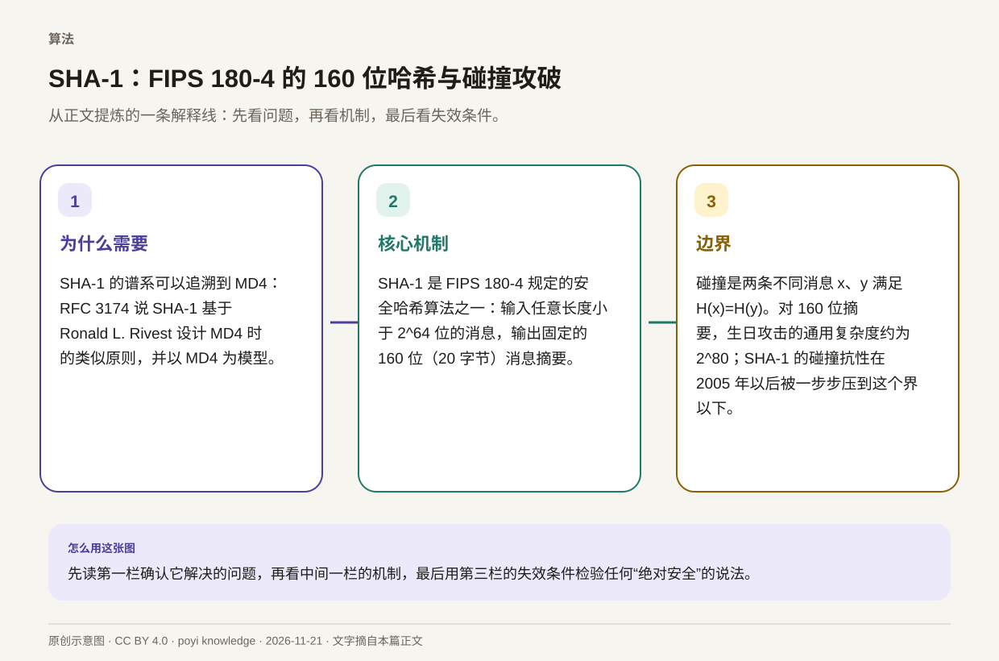
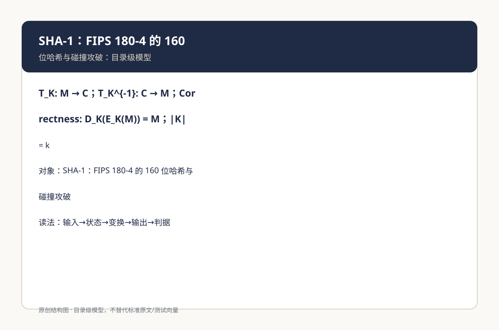

原理与机制
算法：SHA-1 散列（SHA-1）。SHA-1 是 FIPS 180-4 规定的安全哈希算法之一：输入任意长度小于 2^64 位的消息，输出固定的 160 位（20 字节）消息摘要。它按 512 位（16 个 32 位字）分块处理，内部状态是 5 个 32 位字 H0…H4。RFC 3174（2001 年 9 月，Informational）把同一算法、C 参考代码和测试驱动程序公开给互联网社区，并明确它不规定任何互联网标准；本轮的算法描述以 FIPS 180-4 为准，测试向量以 RFC 3174 为准。填充规则是：先追加一个 1 位（实现上是 0x80 字节），再补最少的 0 位，使消息位数对 512 同余于 448；最后追加填充前消息位数的 64 位表示（高位在前，即大端），即使消息长度已经同余也要填充。例如 "abc" 长 24 位，填充后成为 64 字节块：61 62 63 80 后跟 52 个 00，末尾 8 字节是 00 00 00 00 00 00 00 18。按 32 位字读，X[0] = 0x61626380、X[15] = 0x00000018，其余为零。填充后的消息被解析为 N 个 512 位块，每块是 16 个 32 位字 M(0)…M(15)。SHA-1 的初始哈希值是：
H0 = 67452301
H1 = efcdab89
H2 = 98badcfe
H3 = 10325476
H4 = c3d2e1f0
消息表的前 16 个字就是块字；对 16 ≤ t ≤ 79，扩展公式是
W(t) = ROTL1(W(t−3) xor W(t−8) xor W(t−14) xor W(t−16))
其中 ROTL1 表示 32 位循环左移 1 位。80 步使用三个逻辑函数：0–19 步用条件选择 Ch(x,y,z) = (x and y) xor (not x and z)；20–39 与 60–79 步用奇偶函数 x xor y xor z；40–59 步用多数函数 Maj(x,y,z) = (x and y) xor (x and z) xor (y and z)。四个阶段的轮常量分别是 0x5a827999（0–19）、0x6ed9eba1（20–39）、0x8f1bbcdc（40–59）与 0xca62c1d6（60–79）。```
T = ROTL5(a) + f(t,b,c,d) + e + K(t) + W(t)
e ← d
d ← c
c ← ROTL30(b)
b ← a
a ← T
所有加法都是模 2^32 的 32 位加法，ROTL5 与 ROTL30 分别是循环左移 5 位与 30 位。每块 80 步结束后，把工作变量加回进入该块时的哈希值：H0←H0+a、H1←H1+b、H2←H2+c、H3←H3+d、H4←H4+e。处理完所有块后，160 位摘要是 H0 H1 H2 H3 H4 的串联。SHA-1 共 80 步，按函数与常量分为四个 20 步阶段。
为什么重要
SHA-1 的谱系可以追溯到 MD4：RFC 3174 说 SHA-1 基于 Ronald L.Rivest 设计 MD4 时的类似原则，并以 MD4 为模型。它之前的 SHA-0 于 1993 年首次发布，SHA-1 于 1996 年首次发布；SHA-0 是 SHA-1 的前身，二者只差消息扩展函数中的一次旋转，而 NIST 于 1996 年撤回了 SHA-0。RFC 6194 因此说「it is not prudent to use either」（在需要碰撞抗性时使用 SHA-0 或 SHA-1 都不明智），任何 SHA-0 用法都被强烈劝阻。160 位摘要的直接后果是生日界为 2^80：在理想哈希函数上，找到「any two messages with the same digest」（任意两条同摘要消息）约需 2^80 次计算，而 128 位摘要只有 2^64。SHA-1 的 80 步、四个 20 步阶段和消息表在每一步的参与，使局部改动在更多轮次中扩散。RFC 3174 也指出，签名「digest rather than the message often improves」（摘要而不是整条消息，通常能提高效率），因为摘要远小于消息，验证方必须使用与签名方相同的哈希算法。但标准并没有给出安全证明。RFC 3174 说 SHA-1 被称为安全是因为计算上难以找到给定摘要的原像或两条同摘要消息——这是当时的安全假设，不是数学定理，也不是对碰撞抗性的永久保证。后来的攻击正是从这条假设的边界上突破的。
应用与实例
SHA-1 的典型用途是数字签名：先计算消息摘要，再把摘要交给签名算法生成或验证签名；FIPS 180-4 也把 SHA-1 列入安全哈希标准。即使到 2017 年，它仍广泛用于文档签名与 TLS 证书签名，以及 Git 等软件的完整性与备份。SHAttered 论文把 Git 版本控制系统列为当时仍广泛使用 SHA-1 的软件例子之一。HMAC-SHA-1 是另一类用途：HMAC 把 SHA-1 用作带密钥的消息认证码，而不是把 SHA-1 直接当作碰撞抗性哈希。RFC 6194 §3.3 说，截至 2011 年没有迹象表明针对 SHA-1 的攻击可以扩展到 HMAC-SHA-1。RFC 2202 §3 给出七组 HMAC-SHA-1 一致性测试向量，其中第 2 组使用密钥 "Jefe"、消息 "what do ya want for nothing?"，摘要为 effcdf6ae5eb2fa2d27416d5f184df9c259a7c79。NIST 的当前政策把用途分得很细：SP 800-131A Rev.2 的表 8 规定，SHA-1 用于数字签名生成是「disallowed」，除非「specifically allowed by NIST protocol-specific guidance」，用于数字签名验证属于「legacy use」，用于非数字签名应用属于「acceptable」；表后的说明重申了这三点。RFC 6194 的结论则是，SHA-1 的碰撞抗性低于预期，协议设计者应认真考虑支持更强的哈希，SHA-256 是当时最常被指定的替代。需要强调：这里可接受只针对「that do not require collision resistance」（不要求碰撞抗性）的用途；任何要求碰撞抗性的新设计都不应使用 SHA-1。SHAttered 论文还记录，2015 年 freestart 碰撞的成本估计公布后，CA/Browser Forum 撤回了延长 SHA-1 HTTPS 证书签发的议案，IETF 的 TLS 1.3 规范也弃用了 SHA-1 数字签名。

边界与攻击面
碰撞是两条不同消息 x、y 满足 H(x)=H(y)。对 160 位摘要，生日攻击的通用复杂度约为 2^80；SHA-1 的碰撞抗性在 2005 年以后被一步步压到这个界以下。RFC 6194 §3.1 记载：2005 年初的第一项 SHA-1 攻击针对「reduced to 53 rounds.The very next month」（版本被缩减到 53 轮；就在下一个月）；Wang、Yin、Yu 的论文展示了「showed collisions in the full 80 rounds in」（在完整 80 轮上、约 2^69 次操作内找到）碰撞；截至 2011 年没有已发表结果改进这一复杂度。RFC 6194 同时指出，SHA-1 的「collision security strength is significantly less than」（碰撞安全强度显著低于）理想哈希函数的 2^80。2013 年，Stevens 给出完整 SHA-1 的当时最好碰撞攻击，估计约 2^61 次压缩。2017 年，Stevens、Bursztein、Karpman、Albertini 与 Markov 给出了完整 SHA-1 的第一个已知碰撞实例：两条哈希相同但显示内容不同的 PDF。该碰撞的计算量约等于 2^63.1 次 SHA-1 压缩，耗费约 6,500 CPU 年和 100 GPU 年；作者说这仍比暴力搜索快 100,000 倍以上。这个结果把 SHA-1 碰撞从理论上可行推到了可以实际计算。2020 年，Leurent 与 Peyrin 报告了第一个实际实现的 SHA-1 选择前缀碰撞：攻击者可以让两条碰撞消息各自以任意指定前缀开头，这比普通（同前缀）碰撞更危险。选择前缀碰撞的复杂度约为 2^63.4（普通碰撞约为 2^61.2）；实际计算用 900 块 Nvidia GTX 1060 GPU 跑了两个月，作者估计成本约 4.5 万美元（普通碰撞约 1.1 万美元）。在 PGP 演示中，攻击者构造两把身份不同的密钥和相互碰撞的 SHA-1 证书，使第三方对 Bob 密钥的认证签名可以转移到 Alice 的伪造密钥上，从而形成冒充。作者结论是：SHA-1 不应用于任何期望某种碰撞抗性的安全协议；继续把 SHA-1 用于证书或 TLS/SSH 握手消息认证是危险的，作者强烈建议移除 SHA-1 支持。但被打破的是碰撞抗性，不是全部性质：
- 原像与第二原像：RFC 6194 §3.2 说「There are no known pre-image or second pre-image attacks」（没有已知的专门针对完整 80 轮 SHA-1 的原像或第二原像攻击）；但对窄管道 Merkle-Damgård 哈希有一般性结果：对 60 字节消息可在约 2^106 次计算内找到第二原像。最好的缩减轮原像攻击是 48/80 轮、复杂度 2^159；RFC 提醒缩减轮结果只说明安全余量，不是完整算法的攻击。- HMAC-SHA-1：RFC 6194 §3.3 说截至 2011 年没有迹象表明针对 SHA-1 的攻击可以扩展到 HMAC-SHA-1。这与 NIST 把 SHA-1 的非签名用途列为
可接受一致；但这只是说已知碰撞攻击没有扩展到 HMAC，不等于 HMAC-SHA-1 在所有场景都安全。在治理层面，SHAttered 论文说 SHA-1 是 1995 年的 NIST 标准，并因密码分析显示的根本性弱点在 2011 年被 NIST 正式弃用；RFC 6194 则记载 NIST 建议 2010 年 12 月 31 日之后不再用 SHA-1 生成数字签名，并规定美国联邦政府机构在 2013 年 12 月 31 日之后不得为敏感但非机密信息生成 SHA-1 签名。今天仍在使用 SHA-1 的系统，应当把它限制在不需要碰撞抗性的遗留场景，并按迁移计划替换。
历史与背景
- 1993 年：SHA-0 首次发布；RFC 6194 记载 NIST 于 1996 年撤回 SHA-0。- 1995–1996 年：SHAttered 论文称 SHA-1 是 1995 年的 NIST 标准；RFC 6194 记载 SHA-1 于 1996 年首次发布。SHA-0 是 SHA-1 的前身，二者只差消息扩展函数中的一次旋转。- 2001 年 9 月：RFC 3174 发布，把 SHA-1 的算法、C 代码和测试向量整理为 Informational 文档。- 2005 年：Wang、Yin、Yu 展示完整 80 轮、约 2^69 次操作的碰撞攻击；此前一个月左右，第一项攻击只针对缩减到 53 轮的版本。- 2011 年 3 月：RFC 6194 发布，汇总 SHA-0 与 SHA-1 的安全考虑，并给出协议设计建议；同年前后 NIST 正式弃用 SHA-1 用于数字签名。- 2013 年：Stevens 给出约 2^61 次压缩的完整 SHA-1 碰撞估计。- 2017 年：SHAttered 结果在 CRYPTO 2017（LNCS 10401，pp.570-596）发表，给出第一个实际碰撞实例。- 2019 年 3 月：NIST SP 800-131A Rev.2 发布，表 8 给出 SHA-1 在签名生成、签名验证和非签名应用中的当前状态。- 2020 年 8 月：Shambles 结果在第 29 届 USENIX Security Symposium 发表，给出第一个实际选择前缀碰撞与 PGP/GnuPG 冒充演示。
逐步示例与核验
复算示例
取标准或公开测试向量中的一组参数，按“输入—执行—输出”记录：先写出该条目的形式式 (h=H(M),\quad H:{0,1}^{*}\to{0,1}^{n})；再按规范顺序执行每一步，最后把输出与独立实现或标准向量逐字节对照。若没有可引用的数值向量，就只记录结构步骤，不伪造输出。
参考出处
- Wikipedia search entry for SHA-1 散列. https://zh.wikipedia.org/w/index.php?search=SHA-1%20%E6%95%A3%E5%88%97
- Handbook of Applied Cryptography (Menezes, van Oorschot, Vanstone). https://www.cacr.math.uwaterloo.ca/hac/
- RFC 3174: US Secure Hash Algorithm 1 (SHA1). https://www.rfc-editor.org/rfc/rfc3174